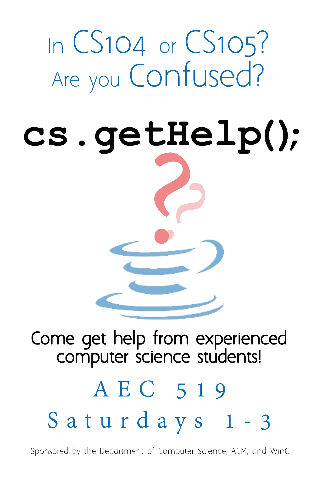

A help group for introductory level courses
September 2014 - Present
Computer Science can get hard. Students need to be in the right mindset to understand how computers. When I was a Teachers Assistant for an introductory CS course, there was a large divide between those who understood and those who didn't. Members of the Association for Computing Machinery (ACM) and Women in Computing (WinC) set to change this for Lafayette College. While the original idea for cs.getHelp(); came from me, we do not have a leader. Instead, we got members from both clubs to help create a division for cs members.
We take a different approach to help session. Every Saturday afternoon students sit in one of the CS labs with staff willing to listen to questions. Since we have at least 3 staff members in the room we can spend more time with each student who needs help. For every problem a student has we check to see if the students have an understanding of the core concepts. Our goal is to help a student without touching their keyboard. We finally leave asking if they can explain the core concept to us to see if they fully understand.
Works

cs.getHelp(); Poster - Created by Bret Black